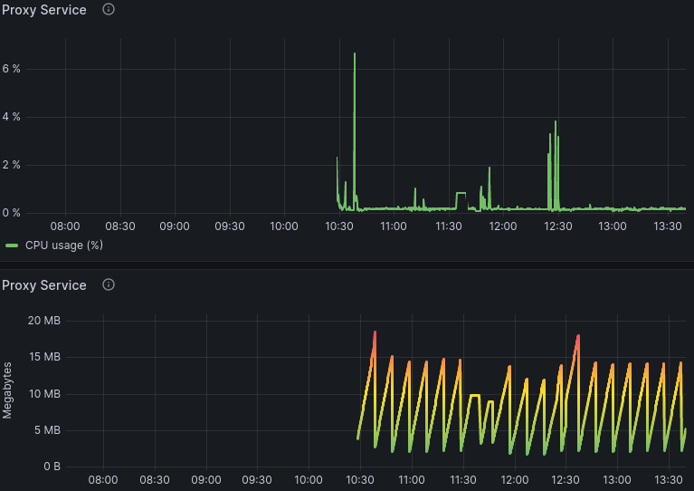

Prometheus og Grafana. To vigtige teknologier indenfor microservice-verdenen. Prometheus er et open source-værktøjssæt til overvågning og alarmering af systemer. Det har en ret basic UI, hvilket er grunden til at bruge Grafana. Man giver Prometheus noget systemforbrugs-data, og grafana kan automatisk opfange dataen fra Prometheus. Prometheus bliver mest brugt på samme system, som Grafana køre på, data Prometheus ikke har nogen login- eller registreringsfunktion. Som set på billedet under, har jeg lavet to grafer i Grafana.
For at køre Prometheus i en Docker container, skal bi bruge to filer. En docker-compose.yml fil og en prometheus.yml fil. Her er de to filer jeg bruger docker-compose.yml og prometheus.yml. På billedet under, på linje 2 sætter vi en interval, der bestemmer hvor ofte Prometheus skal læse dataen fra /metrics endpoint, som vi indsætter data i, fra proxy servicen fra min microservice.
På linje 3 sætter vi en timeout, der specificere hvor lang tid Prometheus skal vente, hvis den ikke kan finde noget data på /metrics. På linje 9 og 13 læser vi dataen fra vores /metrics endpoint. Noget hurtigt info, Jeg kunne ikke få Prometheus til at læse fra /metrics igennem det Docker Network alle services jeg har lavet, køre på. Så jeg bruger bare IP'en fra min VPS, hvor microservicen køre på. Og det lader til at virke.
Nu er det tid til at sætter Grafana op. Først er der et par programmer, som skal installeres. Det første man altid gør. er at køre
sudo apt update, for at updatere den lokale package database. Efter det er gjort, så kør:
sudo apt-get install -y apt-transport-https
sudo apt-get install -y software-properties-common wget
sudo wget -q -O /usr/share/keyrings/grafana.key https://apt.grafana.com/gpg.key
Hvis du gerne vil bruge den stabile version, så kør: echo "deb [signed-by=/usr/share/keyrings/grafana.key] https://apt.grafana.com stable main"
| sudo tee -a /etc/apt/sources.list.d/grafana.list. Så kør sudo apt update igen. Til sidst, installer Grafana med kommandoen:
sudo apt-get install grafana. Dette vil installere den open source version.
Nu er det tid til faktisk at bruge Grafana. Åben din browser og skriv https://localhost:3000, og den burde automatisk
åbne Grafana. Standard bruger og kode er "admin". Får at hente dataen fra Prometheus, skal man trykke på burger menuen øverst til venstre -->
Connections --> Your connections --> Data sources, og så tryk på "+ Add new data source" øverst til højre. Du ville ramme
en side som såddan vist på billedet under.
Når man trykker på "Prometheus" knappen, dukker der en side om med en god mængde indstillinger, som set på billedet under. Den eneste ændring jeg gjorde mig, var at ændre port 9090 til 9000. Så handler det bare om at opsætte nogle dashboards I Grafana.
Lige et indblik i, hvordan det kan se ud, når jeg stess tester min microservice, visualiseret i Grafana.